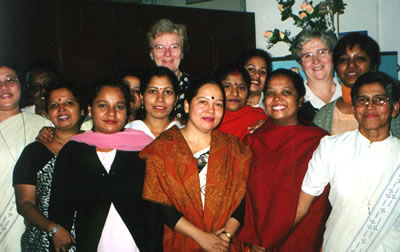
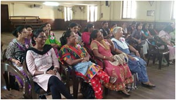
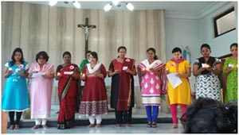
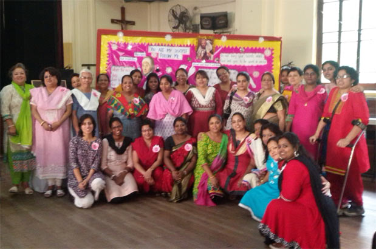

Some Members of the Lay Associates
Identity
The Loreto Lay Associates are a group of like-minded lay women who are inspired by the vision of Mary Ward. They have come together to answer a call experienced individually and to express as a group a burning desire to serve. They aspire to work as a lay extension of the IBVM (Loreto) family, in keeping with the spirit and charism of Loreto.
Name
Since they choose to model themselves on Mary Ward and as they are so closely bound to the Loreto (IBVM) Institute, they have decided to call themselves the Loreto Lay Associates.
Entry
The Associates welcome any adult to be its member. Official membership begins on taking the promise. The decision to allow a member official entry or even to terminate membership will depend on a vote taken by the Associates and confirmed by the Associate Council.
Association With Loreto
The Loreto Lay Associates honour the spirit and charism of the Loreto foundress, Mary Ward. It desires to collaborate actively in the Loreto mission and to be part of the Loreto family. While the Associates function autonomously, it will be united to Loreto under the leadership of the Provincial and expects for its part, that the Institute will extend to the Associates the bonds of love, union and a share of its mission. This, however, excludes any financial remuneration for services rendered. The Spiritual Animator will be a Loreto sister appointed by the Provincial Leader.
Commitment
As Loreto Lay Associates they are called to answer the spiritual and human needs of our times. They are required to adopt a life of daily prayer to nurture spiritual growth. The members are also enjoined to fulfil their obligations and duties towards their existing state of life and simultaneously maintain amiable and cordial relations with those with whom they live, work and pray.

Group Obligations
To sustain the ideal of commitment to God for others, an annual renewal of promise is considered compulsory, along with regular participation in retreats or recollections, training programmes, social get-togethers and monthly meetings. The members should seek to build and promote bonds of love and trust through mutual sharing with one another, especially at the meetings and gatherings conducted by the Associates.
Formation
A new member must remain in formation for at least one year prior to taking the promise for the first time. Aware of the need for ongoing formation, the Associate seeks ways to develop her human gifts and to mature in her faith and charity.
Mission
Each member remains in the mission in which she finds herself. The Lay Associates (as a group) could choose any apostolate pertaining to the girl child, youth, women or the family – to which every member is expected to give her support. Likewise, it is expected that the Associates will support individual members’ mission. The members should strive to become creative and effective leaders. They should work for the growth and spread of the movement by opening themselves to new members who share the same values and ideals of the Association.
Structure
The Loreto Lay Associates will have at its head a President, a Secretary and a Treasurer – elected by the group. The term of office will be two years with no immediate re-election. An Annual General Meeting will be held of all the units during which the reports of the units, including the financial reports will be presented. The Loreto Lay Associates will seek to generate funds in creative ways without putting financial obligations on any member. The Associate Council consists of the President, Secretary, Treasurer and the Spiritual Animator, under the leadership of the Province Leader.

History
The Loreto Lay Associates were first established on the 23rd January 1997 by former Loreto students who felt a sincere need to give back to Loreto some of what all of them had received. A group of 15 members under the guidance of Sr.Lucy Byrne, IBVM decided to serve the Kingdom of God as lay women in serving the old and infirm, preparing children for First Holy Communion and Confirmation, working for the girl child and empowerment of women in close collaboration with the Loreto sisters.
LAY ASSOCIATES – COMITTMENT DAY 2015
11th October was a very special day for the Mary Ward lay Associates as 18 new members made their commitment for the first time.
The day began with a Recollection program conducted by Fr. Saju. S.J. In the two sessions that he conducted through his stories, anecdotes and life experiences he helped us to reflect on what commitment is.
After the sessions we proceeded to the chapel for the Eucharistic celebration, that was celebrated by Fr. Saju and attended by the sisters, family, friends and associates. During the celebration the old members renewed their commitment while 18 new members made their commitment for the first ti me. It was Joyous occasion for all.
- The liturgy was prepared by the Associate members.
- The day ended with a sumptuous lunch.
THE FIRST MEMBERS
|
Mary Anne Gupta
|
Valarie Gomes
|
|
Grace Williams
|
Rupa Gupta
|
|
Maria Meena Das
|
Suzanne Rozario
|
|
Salomi Ekka
|
|
Members Today – Mary Ward Associates
|
Loreto Bowbazar
|
Hancy Murray, Sugdira Rai, Dominica Abraham, Suzanne Rozario
|
|
Loreto Elliot Road
|
Mavis Partridge, Ann Marie Rocha, Sophia Govindraj, Nirmala Biswas, Janet Sharpe, Rajni Osta, Ria Nathani, Rosalinda Ireland
|
|
Loreto Entally
|
Deborah D’Silva, Agnes D’Souza, Mallica Singh, Ruth Das, Cecilia Bhagwati, Grace Williams, Mary Ann George, Astha Mishra, Vincy Viveka
|
|
Loreto House
|
Margaret D’Costa, Mary Devraj, Ann Gahatraj, Keka Bose, Evangeline Paul, Jessica James
|
|
Loreto Sealdah
|
Mousumi D’Rozario, Catherine Gomes, Cecilia Michael, Linda Dirkzs, Regina Brangers, Laetitia Buckley
|
